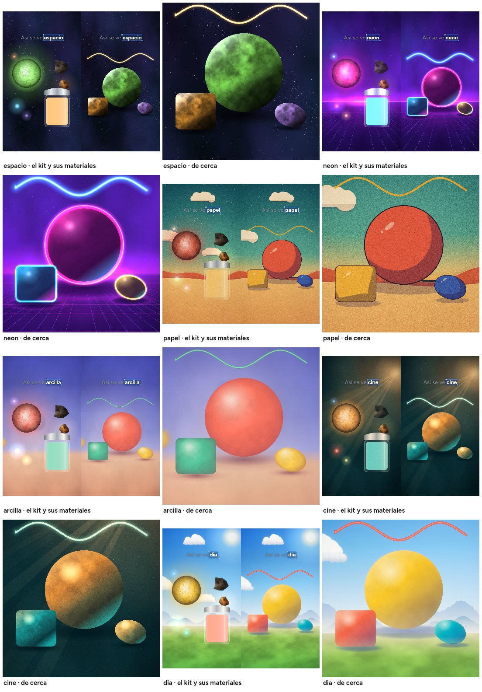
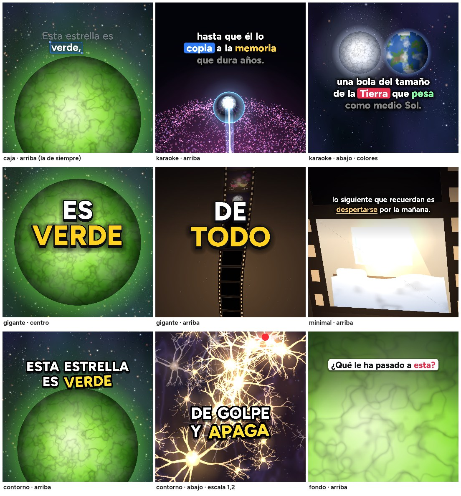

La app de Claude en tu ordenador
No vale la web. Necesitas la app y una cuenta Claude Pro o superior. En Linux, la app está en beta para Ubuntu y Debian.
Descargar ClaudePrimeros pasos
Vas a ver que es fácil. Haz los pasos en orden, sin saltarte ninguno. Tú pones la idea y tu IA hace el resto.
La guía te enseña solo lo que necesitas. Gemini o Grok funcionan de forma parecida desde su app de escritorio.
Antes de empezar
No vale la web. Necesitas la app y una cuenta Claude Pro o superior. En Linux, la app está en beta para Ubuntu y Debian.
Descargar ClaudeNo vale la web. Abre Codex desde la aplicación de escritorio.
Descargar ChatGPTEs quien pone la voz. Pagas solo lo que usas; en el paso 4 verás qué copiar.
El archivo .zip o el enlace de descarga que te pasaron.
La guía
No necesitas abrir una terminal ni escribir comandos.
Paso 1 de 5
Abre el enlace de descarga que te pasaron y descarga el archivo .zip del proyecto.
Normalmente estará en tu carpeta Descargas.
Paso 2 de 5
El archivo viene comprimido, como una maleta cerrada. Para abrirlo:
Aparece una carpeta llamada Videos-virales-3d. La buena es la que contiene este archivo EMPIEZA-AQUI.
Paso 3 de 5
Abre la app de Claude y pulsa Code, arriba. Encima del recuadro de escribir verás Local y Select folder. Pulsa Select folder y elige Videos-virales-3d.
Abre la app de ChatGPT y entra en Codex. Pulsa el + junto a Projects, deja seleccionado Local y elige Videos-virales-3d.
Así tu IA puede leer lo que hay dentro. A partir de aquí, todo se hace escribiendo en el chat.
Paso 4 de 5
Escríbelo en el chat y pulsa Enter.
configúrameTu IA instala lo que falta y abre una página en tu navegador para que pegues tu clave de ElevenLabs. Es la llave que le permite poner la voz. Pégala en esa página, nunca en el chat: la página funciona solo en tu ordenador, no envía la clave a ningún servidor y la guarda solo ahí.
Después te pregunta en qué idioma son tus vídeos y unas cosas más: cómo quieres cerrarlos, si llevan efectos de sonido, si quieres tu @ en ellos y si prefieres un estilo fijo o que lo elija según el tema. Contéstale en el chat como a una persona.
Por último te abre otra página para escuchar las voces y elegir la de tus vídeos con un clic: las de tu cuenta y las de la biblioteca de ElevenLabs en tu idioma. Escucharlas no gasta nada.
sk_ y es larga.sk_. ElevenLabs solo la muestra una vez; si no la copiaste, crea otra.Paso 5 de 5
Pídeselo con tus palabras, como si hablaras con una persona. Por ejemplo:
Hazme un vídeo sobre por qué el cielo es azul¿No tienes tema? Pídele ideas: «Dame ideas para un vídeo».
Si quieres un estilo concreto, dilo también: «en look neón», «con subtítulos gigantes», «como un mito contra la realidad».
Desde aquí, tu IA investiga, escribe, dibuja y anima. Tú das el visto bueno cuando te pregunte.
Tu estilo
Seis looks y seis estilos de subtítulos. Elige uno para todos tus vídeos o deja que tu IA escoja según el tema. Se cambia cuando quieras, escribiéndolo en el chat.


A partir de ahora, look cine y subtítulos contornoQué esperar
Así sabrás qué es normal y no tendrás que preocuparte.
Tarda unos minutos en dejar tu ordenador listo. Solo pasa una vez.
Para instalar programas o abrir páginas. Es normal: acepta. Si el ordenador pregunta si permites cambios, di que sí.
Se revisa varias veces antes de entregártelo. Puede tardar una hora o más; deja el ordenador encendido y la app abierta.
Verás imágenes y frases del vídeo. Dile qué cambiar o escribe adelante.
Escribe a partir de ahora en look papel para todos tus vídeos, o este con subtítulos karaoke para uno solo. Para otra voz, cámbiame la voz; para repasarlo todo, configuración.
Dentro de la carpeta, en salida: el vídeo, la portada y el texto del post. Para leer el guion, escribe enséñame el guion.